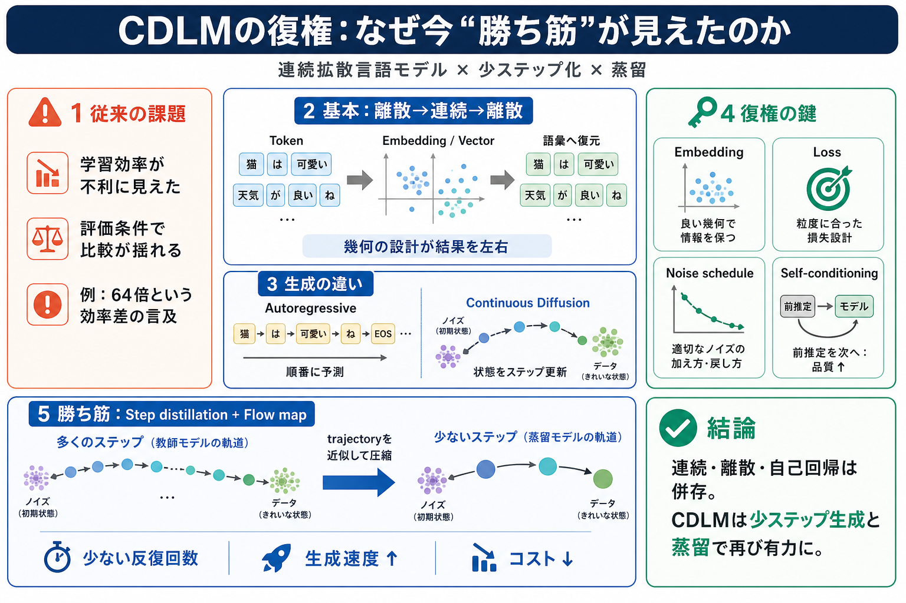

Diffusion and Osmosis - Biology LibreTexts
the process of diffusion. In living systems, diffusion is responsible for the movement of a large number of substances, …

the process of diffusion. In living systems, diffusion is responsible for the movement of a large number of substances, …
In chemistry and materials science, diffusion also refers to the movement of fluid molecules in porous solids. Different…
In the process of diffusion, a substance tends to move from an area of high concentration to an area of low concentratio…
in animals: + oxygen and carbon dioxide are diffused in and out of the blood + carbon dioxide is diffused out of the…
Diffusion is the process by which particles of one substance spread out through the particles of another substance. Diff…